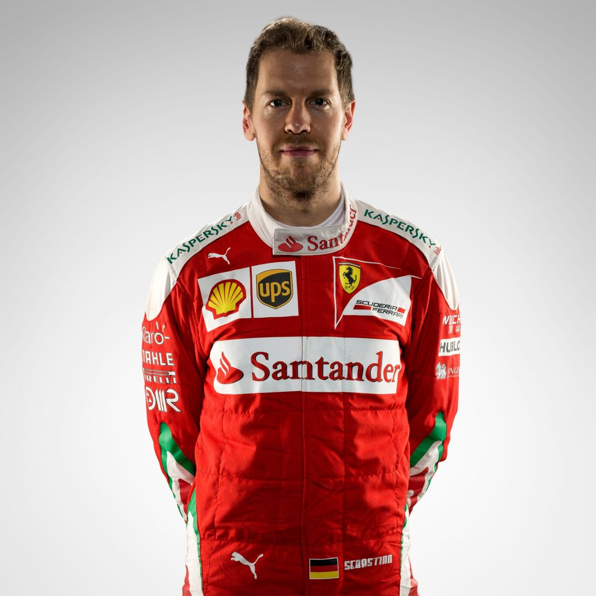

Home
Pilotos
Posiciones
Encuestas

5
Sebastian Vettel
Informacion del Piloto
Equipo
Ferrari
Pais
Alemania
Podios
81
Campeon Mundial
4
Mejor resultado en carrera
1(x42)
Fecha de nacimiento
03/07/1987
Lugar de Nacimiento
Heppenheim, Alemania
Compañero
Kimi Räikkönen
Premios y Logros conseguidos
2013: Campeonato Mundial de F1 - Piloto con más puntos conseguidos en una temporada
2012: Campeonato Mundial de F1 - Piloto con más adelantamientos en una temporada
2011: Campeonato Mundial de F1 - Piloto con más Poles en una temporada
2010: Campeonato Mundial de F1 - Piloto más joven en ganar un campeonato del mundo
2009: Subcampeón Mundial de F1 - Piloto más joven en conseguir pole position, victoria y vuelta rápida
2008: Piloto más joven en conseguir una Pole Position en Fórmula 1
2007: Piloto más joven en liderar una carrera de Fórmula 1, por al menos una vuelta
2006: Segunda posición en el Campeonato de Formula 3 Euro Series
2005: Copa Rookie en el Campeonato de Formula 3 Euro Series
2004: 1 Ganador de la Formula BMW ADAC
2003: Copa Rookie de la Formula BMW ADAC